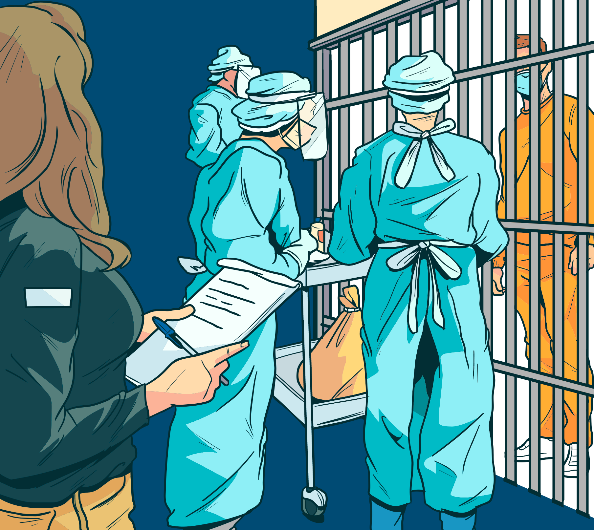

Procedimento com os casos graves
Conforme vimos, casos mais graves da covid-19 demandam atenção hospitalar e não há previsão de que sejam tratados pelas equipes intramuros.
No intuito de garantir o acesso aos serviços hospitalares de retaguarda e prevenir o agravamento da condição de saúde dos pacientes, as equipes de saúde devem intensificar a identificação e o acompanhamento de casos suspeitos ou confirmados em pessoas que se enquadrem em grupos de risco.